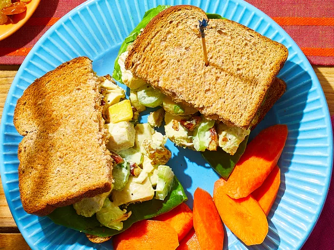

Fruity Curry Chicken Salad

Description
This creamy curry chicken salad gets lots of flavor from curry powder and texture from green grapes, apples, and celery for a delicious fruity twist on the classic chicken salad.
Tastes great on a croissant, on a bed of lettuce, or in a sandwich.
Ingredients
- 4 cooked chicken breasts, diced
- 1 rib celery, diced
- 4 green onions, chopped
- 1 Golden Delicious apple - peeled, cored and diced
- ⅓ cup golden raisins
- ⅓ cup seedless green grapes, halved
- ½ cup chopped toasted pecans
- ⅛ teaspoon ground black pepper
- ½ teaspoon curry powder or more to taste
- ¾ cup light or nonfat mayonnaise
Steps
- Combine chicken, celery, onion, apple, raisins, grapes, pecans, pepper, curry powder, and
mayonnaise in a bowl; mix well to combine.